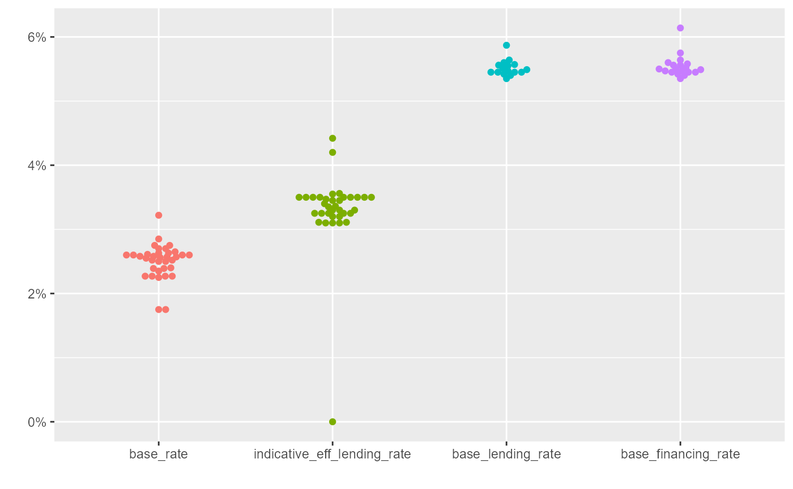

Base rate
library(bnmr) #> BNM Open API #> Please visit https://api.bnm.gov.my/disclaimer to view disclaimers. #> v1 library(ggplot2) library(tidyr) library(dplyr) #> #> Attaching package: 'dplyr' #> The following objects are masked from 'package:stats': #> #> filter, lag #> The following objects are masked from 'package:base': #> #> intersect, setdiff, setequal, union library(ggbeeswarm) library(lubridate) #> #> Attaching package: 'lubridate' #> The following objects are masked from 'package:dplyr': #> #> intersect, setdiff, union #> The following objects are masked from 'package:base': #> #> date, intersect, setdiff, union
base_rate() %>% gather(key, val, -bank_code, -bank_name) %>% mutate(key = factor(key, levels = c("base_rate", "indicative_eff_lending_rate", "base_lending_rate", "base_financing_rate"))) %>% ggplot() + geom_beeswarm(aes(x = key, y = val / 100, color = key)) + scale_color_discrete(guide = FALSE) + scale_y_continuous(labels = scales::percent) + labs(x = "", y = "") #> Warning: Removed 36 rows containing missing values (position_beeswarm).

Consumer alerts
# TODO: make sure output from added_date column is date consumer_alert() %>% mutate(added_date = ymd(added_date)) %>% ggplot(aes(x = added_date)) + geom_histogram() #> `stat_bin()` using `bins = 30`. Pick better value with `binwidth`.